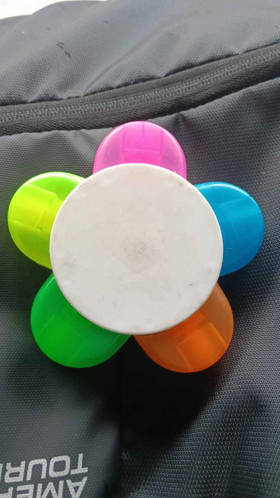
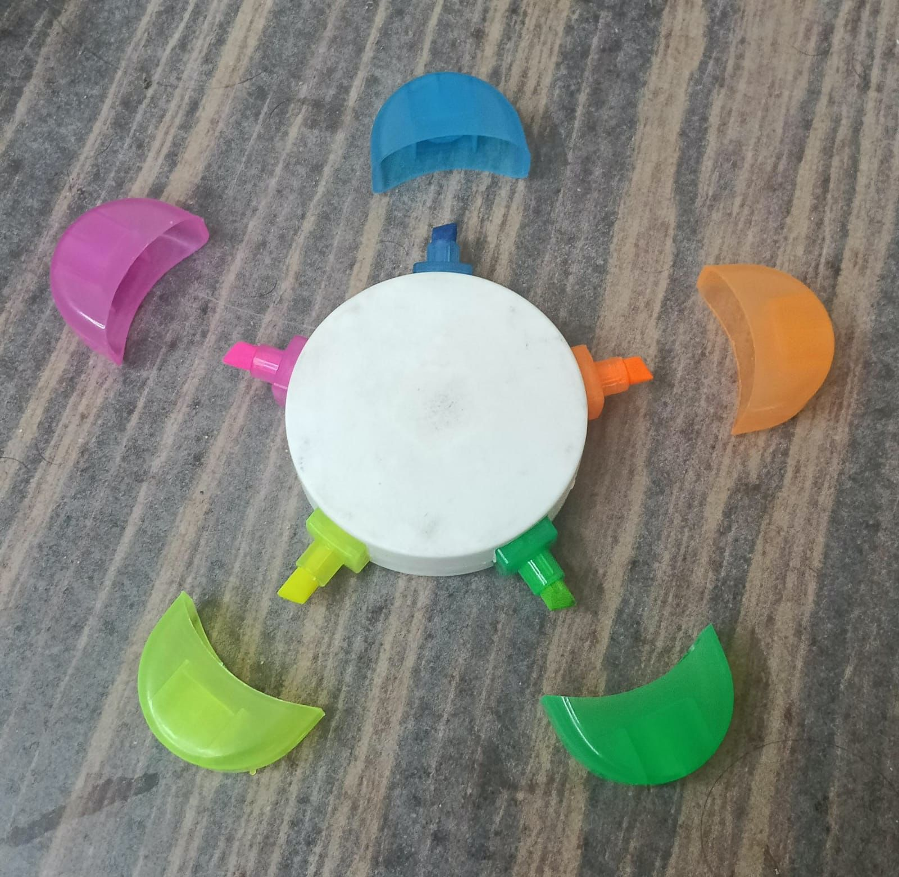
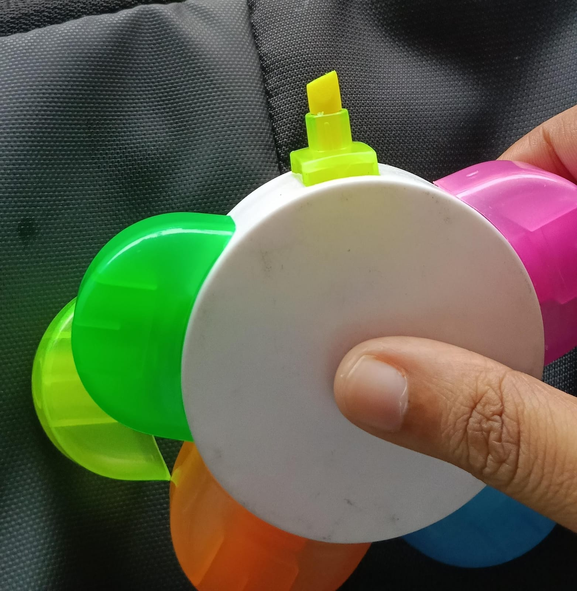

Identify
Recognise the everyday need to keep small desk and craft essentials organised.
A modular, flower-inspired organizer designed to bring a little more order — and a little more colour — to everyday spaces.

One central base. A set of individual petal-shaped compartments. A compact organizer that makes small essentials easier to sort, find and reach.
A non-technical product concept focused on everyday utility, simple interaction and a playful modular form.

01 / DETACHABLE MODULESThe Petal organizer uses a circular central body with curved compartments arranged around it. Each compartment creates a dedicated space for lightweight everyday objects such as paper clips, pins, beads, erasers and other small stationery or craft supplies.
The separate components create a modular layout: users can see the individual sections, sort objects by category and access the items they need.

02 / PROTOTYPE IN HANDExplore the actual STL geometry in your browser. Drag to rotate, scroll to zoom and switch between the available project files.
file://).
To view automatically, open through a web server (e.g. VS Code Live Server) or after publishing to GitHub.
CAD views and prototype photographs from the design process.
A concept-to-prototype workflow, moving from the initial idea to a physical product.
Recognise the everyday need to keep small desk and craft essentials organised.
Develop a flower-inspired layout with a central body and repeated curved modules.
Create the 3D geometry and export the individual parts and assembly as STL files.
Prepare the files for 3D printing, then print, finish, assemble and evaluate the parts.
The 3D model files are included here for inspection. Printing settings and final performance observations should be added after the physical print and assembly are completed.
The product applies human-centred design principles to a familiar, everyday task. Its open compartments make stored objects visible, while the repeated sections suggest where different items can be placed.
Human Machine Interaction
Theory ISE · Component 2